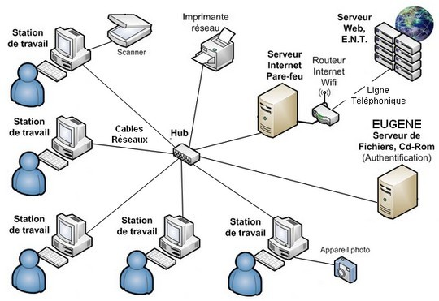

Liste des etudiants
| Matricule |
Nom |
Prénom |
Spécialité |
Section |
Partie |
| 222231353316 |
Djeffal |
Khaled Faiz |
Info LMD |
1 |
PARTIE2 |
| 222231639101 |
Tayebbay |
Abdelhadi |
Info LMD |
1 |
PARTIE1 |
| 212231696518 |
Moulla |
Racim |
Info LMD |
1 |
PARTIE2 |
| 222231632920 |
Doudi |
Mohamed Djemouai |
Info LMD |
1 |
PARTIE1 |
Partie 1: Chapitre 1
Introduction
1/ C'est quoi le TIC?
Les TIC désignent les techniques de l'information et de la communication, qui sont des outils qui manipulent, traitent, produisent, font circuler, transmettent, modifient et échangent des informations sous diverses formes. Les TIC reposent sur la convergence de l'informatique, des télécommunications, de l'électronique et de l'audiovisuel. Les TIC permettent aux utilisateurs de communiquer, d'accéder, de stocker, de manipuler et de produire des informations à l'aide de différentes techniques et dispositifs.
2/ Catégories et objectifs:
Les TIC peuvent être divisées en trois catégories :
- la téléinformatique.
- la télécommunication.
- l'électronique.
La téléinformatique traite de l'échange d'informations numériques entre ordinateurs, les télécommunications traitent des systèmes de communication qui ne sont pas informatisés et l'électronique traite des composants et des dispositifs à usage grand public. Les principaux objectifs des TIC sont de permettre la connectivité, la modularité, la simplicité d'installation, la facilité d'utilisation et la fiabilité des outils de communication.
3/ Composants de TIC:
Les TIC se composent de deux parties :
- le matériel: il comprend des appareils tels que des ordinateurs portables, des téléviseurs, des téléphones et des robots qui peuvent envoyer des données aux réseaux.
- Le logiciel: il comprend les systèmes d'exploitation et les applications qui utilisent les composants matériels. Internet ou les réseaux mobiles font également partie des TIC.
4/ Caractéristiques:
Les TIC présentent plusieurs caractéristiques qui profitent à l'entreprise, telles que la rapidité, la décentralisation, l'accès, la rationalité et la mondialisation. Les TIC permettent des activités plus rapides et plus efficaces, une plus grande responsabilisation et un meilleur partage des informations entre les agents, un meilleur accès et un meilleur partage des informations pour tout le personnel, une utilisation plus rationnelle des informations confidentielles et une plus grande portée internationale. Les TIC permettent également aux informations de circuler et d'être reçues dans de nombreuses gares et régions.
5/ Initiation aux techniques de communication :
Les objectifs de communication sont les réponses attendues du destinataire d'un message. Ils peuvent être cognitifs, émotionnels ou comportementaux. Les objectifs cognitifs visent à informer et faire connaître une marque, un produit, une idée ou une entreprise. Les objectifs émotionnels visent à influencer ou à valoriser l'image d'un produit ou d'une marque. Les objectifs comportementaux visent à modifier le comportement et à inciter à l'achat ou à l'essai.
Le système de communication est un concept qui implique l'expéditeur, le récepteur, le message, le média, le codage, le décodage, la réponse et la rétroaction.
La communication peut être perturbée par le bruit. La communication peut être de deux types : institutionnelle ou commerciale. La communication institutionnelle se concentre sur l'image de l'entreprise ou de l'institution, tandis que la communication commerciale se concentre sur les caractéristiques et les avantages du produit.
Les diagrammes de communication sont les moyens d'envoyer et de recevoir des messages entre différents partenaires.
Il peut s'agir de communication interpersonnelle, de groupe ou de masse. La communication interpersonnelle se fait entre deux personnes, la communication de groupe se fait entre plusieurs personnes et la communication de masse s'adresse à un large public.
Les médias et le multimédia sont les moyens et les modes de représentation de l'information. Les médias peuvent être écrits, audio, visuels ou en ligne. Le multimédia peut combiner des textes, des sons et des images de manière interactive.
Partie 1: Chapitre 2
Les réseaux informatiques
1/ Réseau (informatique) Network:
Un réseau informatique est un système qui connecte deux ou plusieurs ordinateurs ou autres appareils pour partager des ressources et communiquer des données, de la voix et de la vidéo. Un réseau peut avoir différentes architectures, protocoles et topologies et peut aller d'un simple réseau local (LAN) à un réseau étendu complexe (WAN) ou Internet. Un réseau repose sur deux notions fondamentales : l'interconnexion et la communication. Un réseau peut être mis en œuvre à l'aide de divers outils et tâches. Google Traduction est un exemple de service qui utilise des réseaux informatiques pour traduire des textes, des documents et des sites Web d'une langue à une autre.
2/ Les caractéristiques de base d'un réseau sont:
Un réseau possède quatre caractéristiques de base qui définissent son architecture et ses performances : la topologie, le débit, la distance et le nombre de nœuds. La topologie est la façon dont les appareils sont connectés et communiquent. Le débit correspond à la quantité de données pouvant être transmises par seconde. La distance est la distance à laquelle les appareils peuvent être les uns des autres. Le nombre de nœuds correspond au nombre d'appareils pouvant se trouver sur le réseau.
3/ Quelques terminologies en réseau:
A network involves different terms that describe its components and characteristics. A workstation is a device that can send data to the network. A node is any entity that can be identified by a number. A server is a device that provides a specific function to the network. A packet is the smallest unit of information that can be sent over the network. A network can be homogeneous or heterogeneous depending on the manufacturer of the devices. Throughput is the rate of data transmission in the network.
4/ Éléments d'un reseau:
Un réseau se compose de différents éléments qui permettent la communication de données entre les appareils. Ces éléments comprennent des ordinateurs avec des cartes de communication, des applications logicielles, des supports physiques et des équipements d'interconnexion. Selon le type et la taille du réseau, ces éléments peuvent varier. Par exemple, un LAN peut utiliser des câbles à paires torsadées en cuivre ou le WIFI, tandis qu'un WAN peut utiliser des lignes téléphoniques ou des fibres optiques. Un réseau local peut également utiliser un concentrateur ou un commutateur pour connecter des périphériques, tandis qu'un réseau étendu peut utiliser un routeur.
5/ Classification des réseaux
- Par portée l'envergure (La distance):
Les réseaux peuvent être classés selon leur portée ou leur distance. Un LAN est un réseau local qui connecte des appareils au sein d'une entreprise ou d'un bâtiment. Un MAN est un réseau métropolitain qui relie plusieurs LAN au sein d'une ville ou d'une grande organisation. Un WAN est un vaste réseau qui connecte des appareils à travers un pays ou dans le monde. Il existe également d'autres types de réseaux tels que PAN, WPAN, WLAN et SAN qui ont des caractéristiques et des objectifs différents.
- Louverture (leur utilisation):
Les réseaux peuvent également être classés selon leur ouverture ou leur utilisation. Pour les réseaux qui utilisent la famille de protocoles TCP/IP, il existe trois types de réseaux : intranet, extranet et Internet. Un intranet est un réseau privé accessible uniquement au sein d'une organisation ou d'une entreprise. Un extranet est un réseau privé qui est également accessible à certaines entités externes. Un Internet est un réseau public qui connecte différents réseaux à l'échelle mondiale.
- Les supports de connexion : filaires et non filaires:
Les réseaux peuvent également être classés en fonction de leurs supports de connexion ou de la manière dont ils transmettent les données. Les réseaux câblés utilisent des câbles physiques tels que des câbles coaxiaux, des câbles à paires torsadées, des fibres optiques ou des lignes téléphoniques. Les réseaux sans fil utilisent d'autres moyens tels que les ondes radio, les ondes infrarouges, les satellites ou Bluetooth.
- Le type d'organisation : Peer to Peer et client serveur:
Les réseaux peuvent également être classés selon leur type d'organisation ou la manière dont ils partagent les ressources. Les réseaux peer-to-peer sont des réseaux où chaque ordinateur peut agir à la fois comme serveur et comme client. Chaque ordinateur peut partager ses ressources avec d'autres. Les réseaux peer-to-peer sont simples, faciles et bon marché, mais pas très sécurisés. Les réseaux client/serveur sont des réseaux où la plupart des ordinateurs sont des clients et certains sont des serveurs. Les serveurs fournissent des services spécialisés aux clients. Les réseaux client/serveur sont gérés par un administrateur.
6/ Le type de topologie:
Les réseaux peuvent également être classés selon leur type de topologie ou leur organisation physique et logique. Il existe quatre principaux types de topologie : bus, étoile, anneau et maillage. Les réseaux en bus utilisent un seul câble pour connecter tous les appareils. Les réseaux en étoile utilisent un nœud central pour connecter tous les appareils. Les réseaux en anneau utilisent une boucle pour transmettre des données d'un appareil à un autre. Les réseaux maillés utilisent plusieurs chemins pour connecter différents nœuds. Chaque type de topologie a ses propres avantages et inconvénients.

Partie 2: Chapitre 3
Le modéle OSI
1/ Les Composants matériel d'un Réseau informatique:
- Les cartes réseau:
aussi appelées cartes d'interface réseau (NIC), Une carte réseau est un composant matériel qui permet à un ordinateur de se connecter à un réseau informatique.
- SWITCH:
Un switch (commutateur réseau) est un composant matériel utilisé pour connecter des appareils sur un réseau local (LAN).
- HUB:
Un hub (concentrateur) est un composant matériel utilisé pour connecter plusieurs appareils sur un réseau local (LAN).
2/ Modèle OSI:
Le modèle OSI est une architecture en couches qui définit les différentes étapes de la communication des systèmes informatiques. Il comprend sept couches, de la plus basse à la plus haute : physique, liaison de données, réseau, transport, session, présentation et application. Chaque couche a un rôle spécifique dans le transfert fiable des données, depuis la gestion des connexions physiques jusqu'aux services de communication des applications utilisateurs. Le modèle OSI facilite l'interopérabilité des réseaux et des systèmes en fournissant une structure standardisée pour la conception des protocoles de communication.

3/ Modèle TCP/IP:
Le modèle TCP/IP est une suite de protocoles de communication utilisés pour interconnecter les réseaux informatiques. Il se compose de quatre couches : La couche liaison de données, La couche réseau, La couche transport et La couche Application. La couche liaison de données gère le routage des paquets, la couche Transport assure un transfert fiable des données, la couche réseau gère l'adressage logique, et la couche Application fournit les interfaces pour les applications réseau. Le modèle TCP/IP est essentiel pour la communication et l'accès aux ressources sur Internet.
4/ Adressage:
L'adressage dans les réseaux informatiques consiste à attribuer des identifiants uniques, tels que des adresses IP ou des adresses MAC, aux dispositifs connectés à un réseau. Ces identifiants permettent de localiser et de router les données vers leur destination appropriée. L'adressage est essentiel pour assurer la communication et le transfert de données efficaces au sein d'un réseau.
Une adresse IP (Internet Protocol) est un numéro qui identifie chaque ordinateur dans un réseau. Il existe deux modes d'adressage : IPv4 et IPv6.
5/ Mode d'adressage:
Pour IPv4, chaque paquet contient une adresse source et une adresse destinataire sur 32 bits, représentées en décimale avec quatre nombres séparés par des points (par exemple, 172.16.4.20).
les adresses sont divisées en deux parties : l'adresse réseau et l'adresse hôte. Les adresses réseau ont tous les bits de la partie hôte égaux à zéro, tandis que les adresses de diffusion ont tous les bits de la partie hôte égaux à un. Les adresses hôtes se situent entre l'adresse réseau et l'adresse de diffusion.
Pour IPv6, les adresses sont codées sur 128 bits et sont représentées en hexadécimal avec huit groupes de 16 bits séparés par des deux-points (par exemple, FEDC:BA98:7654:3210:EDBC:A987:6543:210F).
Le masque de réseau est utilisé pour déterminer quelle partie de l'adresse IP correspond à l'adresse réseau et quelle partie correspond à l'adresse hôte. Il est représenté en décimal avec quatre nombres séparés par des points (par exemple, 255.0.0.0).
Partie 2: Chapitre 4
Internet et Web
1/ World Wide Web:
Le World Wide Web (WWW) est un système hypertexte public sur Internet qui permet de consulter des pages accessibles sur des sites via un navigateur. Il est représenté par une toile d'araignée, symbolisant les hyperliens entre les pages web. Le WWW est une application d'Internet, qui est le support de communication général.
2/ Principe de World Wide Web
- Accéder à des documents textuels.
- Situés sur des machines accessibles par Internet.
- Reliés entre eux par un mécanisme de lien "hypertexte".
- Servir des ressources.
- Texte, image, son, vidéo, contenu applicatif.
2/ URL:
Une URL (Uniform Resource Locator) est un lien hypertexte qui permet d'ouvrir une nouvelle page. Elle représente l'adresse unique de la ressource et comprend l'adresse du serveur ainsi que l'adresse de la page sur le serveur. Par exemple: http://example.com/un/chemin/page.html
3/ Aspects du Web:
Le mechanisme du Web consiste d'un:
- URL
- HTTP (Protocole de niveau applicatif)
- HTML (language de description de page web)
4/ HTML
HTML (Hypertext Markup Language) est le langage de balisage standard utilisé pour la création et la structuration du contenu des pages web. Il définit la structure logique des éléments d'une page, tels que les titres, les paragraphes, les liens, les images, les tableaux, etc.
Un document HTML est:
- Un fichier texte avec une syntaxe speciale.
- Structuré par des balises.
- visualisé dans un navigateur (Google Chrome, Firefox, etc.)
- Créé dans un éditeur de pages web (Dreamweaver...) ou des IDE (Visual Studio Code...)
Exemple fichier html:
<!DOCTYPE html>
<html lang="en">
<head>
<link rel = "stylesheet" href = "style.css">
<title>TIC</title>
</head>
<body>
</body>
Partie 2: Chapitre 5
Système de Gestion de Version
1/ C'est quoi Git?
Git est un logiciel de contrôle de version créé en 2005 par Linus Torvalds, le créateur de Linux. Largement utilisé dans le domaine du développement de logiciels, Il permet de suivre les modifications apportées à un projet et de coordonner efficacement le travail d'une équipe. Git est principalement basé sur le modèle décentralisé, ou le code source du projet est stocké sur un serveur central.
2/ A quoi sert concrètement un système de gestion de version ?
Lorsque vous travaillez sur un site web et que vous souhaitez apporter des modifications, il est important de sauvegarder le site avant les changements pour éviter les problèmes. Cependant, lorsque plusieurs développeurs travaillent sur le même site, il devient complexe de coordonner leurs efforts et de s'assurer que les fonctionnalités ne se conflictent pas. Une solution efficace consiste à utiliser un système de gestion de version décentralisé, tel que Git. Git permet de créer un historique des modifications effectuées sur les fichiers, de travailler sur des versions différentes simultanément et de faciliter la collaboration en fournissant un accès à l'historique complet du projet.
3/ Modèle centralisé vs Modèle décentralisé
- Un Modèle centralisé est la centralisation du code source lié au projet, tell que la source du code exist sur un serveur distant central et les utilisateurs doivent se connecter à ce serveur pour travailler sur ce code.
- Un modèle distribué est la decentralisation du code source, tell que le code source du projet est toujours sur un serveur distant mais chaque utilisateur est invité à télécharger le code source du projet sur sa propre machine.
4/ C'est quoi Github?
Github est une plateforme web pour héberger et gérer le code source des projets. Elle permet la collaboration entre développeurs, le suivi des modifications et la gestion de versions.
5/ Comment utiliser Git et Github?
- Installez Git sur votre ordinateur et configurez votre nom d'utilisateur et votre adresse e-mail.
- Créez un nouveau dépôt Git local sur votre machine en utilisant la commande "git init".
- Ajoutez des fichiers au dépôt en utilisant la commande "git add" pour les mettre en attente, puis effectuez un commit avec la commande "git commit" pour enregistrer les modifications.
- Créez un dépôt sur GitHub et liez-le à votre dépôt local en utilisant la commande "git remote add origin [URL du dépôt GitHub]".
- Poussez vos modifications vers le dépôt distant sur GitHub en utilisant la commande "git push origin [branche]".
- Pour collaborer avec d'autres développeurs, vous pouvez cloner leurs dépôts en utilisant la commande "git clone [URL du dépôt]".
- Pour synchroniser les modifications entre votre dépôt local et le dépôt distant, utilisez les commandes "git pull" pour récupérer les dernières modifications et "git push" pour pousser vos modifications.
- Utilisez les fonctionnalités de GitHub telles que les problèmes (issues), les demandes de fusion (pull requests) et les branches pour faciliter la collaboration et le suivi des modifications.